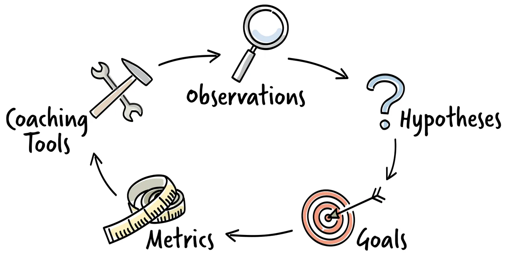

From observations to goals

Making observations and forming hypotheses to explain them is the first step in a structured coaching approach. It shows us where we are, but not where we want to go. So once we have validated our hypotheses, the next step is to set goals we can work towards to improve sustainably.
We capture observations, hypotheses, goals, metrics and coaching tools on coaching cards, one card per coaching topic. The cards follow a circular flow that lets us restart the loop and refine or change hypotheses and goals as needed:
- Everything begins with observations, the basis of the coaching approach.
- Through hypotheses we try to explain what we have observed. We test them rigorously, so that cognitive biases do not drive our decisions.
- Validated hypotheses help identify goals, which describe the behaviour we think would help the person or team improve.
- Metrics are defined immediately after the goals.
- Finally, we choose coaching tools to get there. Choosing tools last ensures that the metrics measure progress towards the goal, not the actions we take.
Throughout the process, further observations show whether we are on track, let us revisit our hypotheses, improve our tools and refine our goals. We move through this loop until the goal is reached.
Behavioural goals
By defining behavioural goals, a coach aims to encourage behaviour that helps a person or team work better, and to reduce behaviour that holds them back. A few principles often point in the right direction:
- Identify the core needs of the team and its members. Trust their expertise and enable them to make decisions themselves.
- Keep it simple. Keep asking what the next most valuable thing is, and do that. Avoid work that adds no value.
- Teams that organise themselves and use the knowledge of the whole group tend to make better decisions. Support them in doing so.
- Make time to reflect regularly and find opportunities to improve.
To define behavioural goals, imagine a future in which the team has improved and ask what its behaviour would look like. A good goal describes behaviour that both leads to that future and helps maintain it. Goals can be ambitious but should not be too abstract. They should be achievable and relevant to the team's development, and they should not be tied to your own performance targets or those of the team.
Metrics
Metrics show the coach and the team whether change is happening, so they must be measurable. We usually define two kinds. Leading indicators show whether we are heading in the right direction, and how well or how quickly. Any behaviour that is a step towards the goal falls into this category. Lagging indicators tell us when we have reached the goal.
Because the coach's main aim is to encourage behaviour that leads to improvement, the metrics usually focus on positive changes in behaviour.
Coaching tools
Any intervention intended to influence behaviour is a coaching tool. Coaching tools generally encourage people to adapt the way they work, which leads to a change in behaviour. The number of possible tools is almost endless, and choosing the right ones is essential to move closer to the goal. Examples include:
- Team meetings and discussions, such as a regular review of how the team works together, in which the team reflects on how to become more effective and adjusts its behaviour.
- Small or large changes to established routines, for example changing the order in which people speak in a regular meeting.
- A coaching conversation with an individual to challenge their thinking, give them new perspectives or shift their mindset.
Why structure helps
Coaching cards keep us focused through each step of the process. They stop us from quickly applying a tool to a symptom, only to find later that our hypothesis was wrong. They document each stage of coaching in an accessible way, which makes it easy to exchange thoughts, ideas and hypotheses with other coaches and to reflect on our own behaviour. This disciplined approach gives a coach the time to observe, test hypotheses, define meaningful goals, check progress and plan interventions with care.
Practice
Your first coaching card. Choose a situation in your own team or organisation. Write down three observations, one or two hypotheses that could explain them, and how you would test those hypotheses. Then formulate one behavioural goal, one leading and one lagging indicator, and two coaching tools you could try.